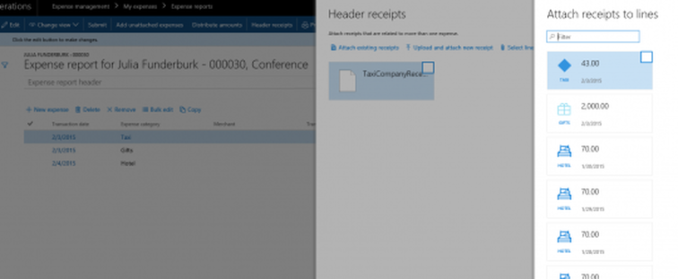

BLOG
 What's new in Microsoft Dynamics 365 for Operations - Financials, Part 3
What's new in Microsoft Dynamics 365 for Operations - Financials, Part 3
May 1, 2017| Real Dynamics Team
In this third installment of a three-part series (Part 1, Part 2), we will summarize more new features in Financials in Dynamics 365 for Operations.
This time, we will look into:
- Expense management
- Cash and Bank management
- Budgeting
- Financial reporting
Expense management
Expense management seems to have gotten a lot of attention. Word on the street is, as Microsoft itself uses the Dynamics AX platform for expense reports, productivity improvements and enhancements for better control in this area are being looked at closely.
Copy an expense report: In prior functionality, the ability to copy an existing expense line within the same expense report existed. This functionality is now extended to allow users to copy the entire expense report and all the associated non-credit-card expenses to a new expense report. Credit card transactions can be added to the expense report when they show up in the credit card statement. Itemizations and attached receipts will not be copied and need to be entered again.
Bulk-edit expenses: You can multi-select credit card expense lines and make updates like adding them to the expense report, changing category or the project.
Create future-dated expenses: When you copy an expense report, you can put future dates on the transactions. However, you cannot submit future-dated expenses for approval. The Copy functionality is great to create future date expenses. It would be great if Microsoft were to add functionality to setup recurring expense reports too.
Ease of attaching receipts to multiple expense lines: Now you don't have to upload the same receipt for each expense line it relates to; you can attach the receipt on multiple lines of the expense report. Also, you can attach a previously uploaded receipt to another expense line in the same expense report.
Create and maintain expense not attached to an expense report: Expenses can be created and maintained (e.g., attach receipts, itemize, assign guests) without first having to create an expense report. One or more expenses can be selected and added to a new expense report to submit for approval.
Define a multi-level approval workflow for expense: Employees can now enter the interim approver(s) when creating an expense report. This workflow will be helpful when a project manager needs to approve the expense report prior to routing it to the employee's supervisor.
Credit card transactions for terminated employees: It is very common to have transactions pending on a terminated employee's card. Terminated employees will no longer have access to corporate systems including the expense portal. In such cases, credit card transactions will still be imported and available in the credit card transactions form, rather than failing import. Such transactions can be then assigned to valid employee to file the expense report.
Change the expense credit card information for pending and past employees: You can define credit card information for pending workers and past workers. This enhancement allows you to define credit card info on a pending employee prior to their joining.
Change the expense credit card information for pending and past employees: You can define credit card information for pending workers and past workers. This enhancement allows you to define credit card info on a pending employee prior to their joining.
Change the exchange rate for credit card transactions: You can now set a parameter in the expense management parameters page to allow employees to override system exchange rate for credit card transactions.
Set up anti-corruption attestation for expenses: When employees have business with government officials, some expenses related to that business may be perceived as bribery. You can now set up an anti-corruption attestation that is displayed for selected expense categories, such as meals and gifts. Employees must acknowledge that the anti-corruption attestation that meets criteria defined by your organization's policies prior to submitting for approval.
Prevent manual entry of specific expense category expenses: An expense category can be set up such that a transaction category cannot be changed on an existing transaction, and which prevents manual entry of transactions. An example is a fee for late payment of a credit card, if corporate policy disallows employees from expensing credit card fees.
Configure expense taxes for a state/province: In some countries and regions like Canada, expenses incurred in a different state or province might be subject to different sales tax rates for recovery. You can now set up the expense tax configurations at the state/province level, not just at the country/region level. If you leave the State/Province field blank on the Tax configuration page, the sales tax group applies to all states and provinces for the specified country or region.
Set up expense credit card types: You can now create credit card types, such as Visa, MasterCard, or AMEX, to use with Expense management. This page is in the Setup area, in the Calculations and codes section. This was just a table with no form for users in prior releases.
Key enhancements that will help customers in this area:
- Travel requisition functionality: This functionality was available in AX 2012 and not yet released for Dynamics 365 for Operations. The ability to convert a travel requisition into an expense report would be welcome.
- Integrations with the travel agents.
- Productivity enhancements in the Expense Management Mobile App like scanning receipts prior to an expense showing up on the credit card, and optical character recognition (OCR) capability to automatically match the receipts.
- A view of all the line-level receipts at the header in a consolidated document. Auditors or approvers of the expense reports need not go through receipts for each line.
What's coming in BI for expense management
Expense management Power BI reports will let managers and supervisors manage their expenditure budgets. By focusing on exceptions and outliers, these reports will help you to quickly take action when and where needed.
You will be able to identify regular expenses and patterns by employees and business units, reduce waste, and negotiate better contracts with your suppliers and service providers for recurring expenses. This means that you can identify the numbers and patterns of expenses as they go through the various stages of processes, which will let you streamline your expense processes by removing bottlenecks and delays.
Cash and bank management
Similar to other areas, improvements in cash and bank management are focused on productivity gains for multi-company environments.
Bank statement import across companies: These enhancements will help customers who get consolidated bank statements across all legal entities to process them in one go, rather than having to process statements in each entity. You can also automatically run matching rules against all imported statements in each company.
Bank management workspace: A new bank management workspace will provide better visibility into bank accounts and balances for your legal entities. Current and pending balances are immediately available for all accounts, with the ability to drill back from the balances into the detailed transaction vouchers. You can also see the historical balance data for each bank account, or summarized for all bank accounts in the company, in both short- and long-term views. There is increased insight into bank account reconciliation, with last reconciled dates reported for each bank account as well as an indication of reconciliations in progress.
Budgeting
It was great to present with Sakata Seed at AXUG Summit about how the company uses Dynamics AX for Budget planning, (for more info please see slide deck).
Few enhancements are being shipped as part the release for budgeting, but the following two are significant.
Budget planning: Justification functionality was not shipped with the initial release of AX7 (It was available in AX 2012 R3) and is now released in the fall update. You can use justification documents to support your budgeting requests and provide additional information such as details of conference, PO or write-up about the overall need for additional head count.
Basic budgeting: Budget exactly how you want by choosing the detail level to track your budget, and take advantage of your existing advanced rules that have been configured. Allow advanced rules in the budgeting process to provide extra budget tracking capabilities by financial dimensions.
A key item on the roadmap is the ability to retain supporting information in the budget plan Excel template (e.g. calculations or additional sheets added to the budget plan worksheet).
A key item asked for by the community is the ability to budget by attributes like customer/vendor/product without having to make them Financial dimensions.
Financial reporting
Management Reporter continues to be the financial reporting tool with Dynamics AX. User experience is more seamless while using it from Dynamics AX, however, financial reports are still delivered through Management Reporter.
Some enhancements to financial reporting follow.
- Analyze data more efficiently with financial dimensions in separate columns when exporting to Microsoft Excel. (I hope this feature gets released for Dynamics AX 2012 too and will be helpful for viewing financial dimensions as values in separate columns while reviewing GL transactions - a pain point reported by many Dynamics AX 2012 customers, and often results in complex custom reports).
- Locking the top section of the report and printing on consecutive pages, similar to the Freeze Pane option in Excel.
- Format reports to contain line numbers to easily identify report rows and statutory formats.
- Print read-only, presentation-ready reports to PDF with Microsoft SQL Server 2016.
- View additional details and versions of the financial reports with the report list enhancements. The list of reports shows when the report was last generated and how it was modified. You can also quickly filter your report list by folder name, so see only the reports relevant to you. View previous versions of the report to accurately track the change in data over time.
- View translated financial data by any currency in the system, simply by choosing the currency in the report.
- Make it easy for users to see the generated date and time on report headers or footers using new autotext options.
What's coming
Microsoft is making significant investments in reporting with the help of Power BI. Expect several more reports that will be helpful across the financial functions delivered through Power BI in the upcoming release.
One of the key areas being worked on is cash flow analysis Power BI reports. This will provide visibility into your cash flow and help analyze future cash inflows and outflows with the cash flow calendar. This means that you can analyze cash inflows from expected payments; and analyze flows by legal entity, financial dimension, currency, and bank account, to get a better understanding of surpluses and shortfalls. Overall, you can get a temporal view of gaps and address them proactively.
If you have any question contact us on info@realdynamics.com
Recent post
-
How-to: Bring your own data warehouse to Microsoft Dynamics 365 for Operations
September 1, 2017| Real Dynamics Team
-
What’s new in Microsoft Dynamics 365 for Operations, Part 2: Warehousing and mobile
August 1, 2017| Real Dynamics Team
-
What’s new in Project accounting and management in Microsoft Dynamics 365 for Operations
July 1, 2017| Real Dynamics Team
-
What’s new in Microsoft Dynamics 365 for Operations – Supply Chain
June 1, 2017| Real Dynamics Team
-
What's new in Microsoft Dynamics 365 for Operations - Financials, Part 2
April 1, 2017| Real Dynamics Team
-
Microsoft Dynamics AX Company Split
March 3, 2017| Real Dynamics Team
-
What's new in Dynamics 365 for Operations (AX7) - Financials, Part 1
February 1, 2017| Real Dynamics Team
-
Budgeting Capabilities in New Microsoft Dynamics AX (Dynamics 365)
January 1, 2017| Real Dynamics Team